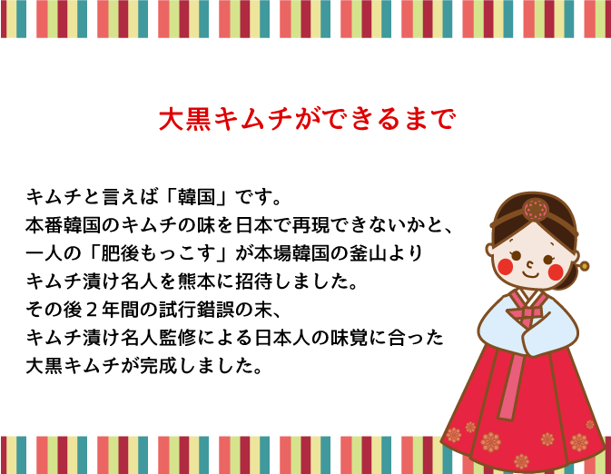
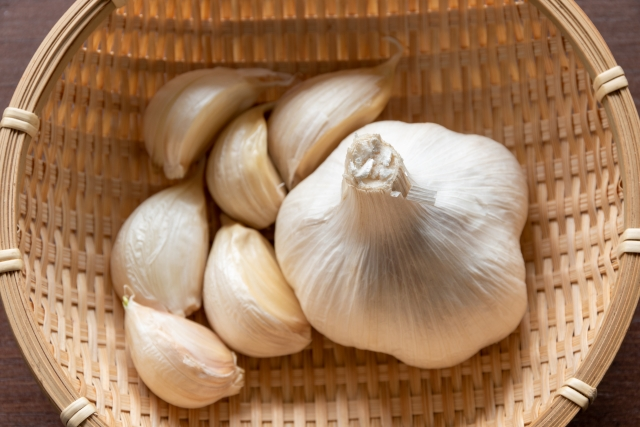
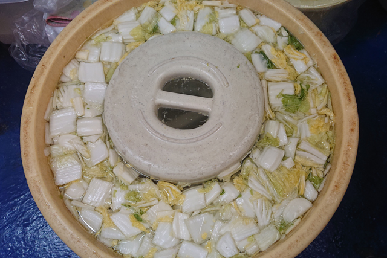
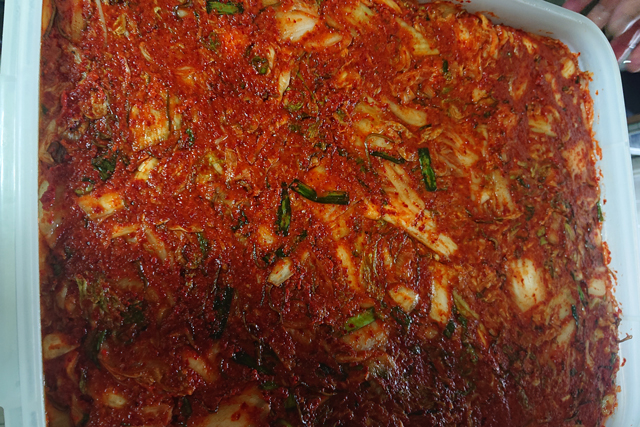
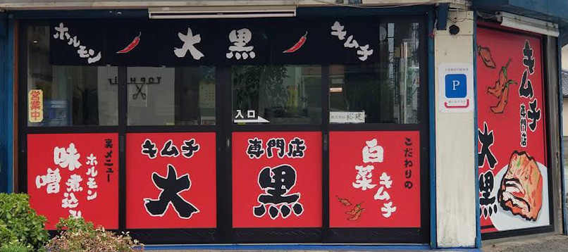

Step.1
まずは素材から
キムチのたれに必要な一番大事なのは「ニンニク」です。ニンニクは熊本県産のものを使用し、一粒一粒ていねいに皮むきをします。このニンニクに赤トウガラシ、ニラなどを加えて秘伝のキムチのたれを完成させます。

Step.2
塩漬け工程
塩漬け作業はキムチの味を左右する大事な工程です。大黒では白菜に重石をして丸2日間塩漬けにします。この工程でしっかりと水分を取り、秘伝のキムチのたれを染み込ませる準備をします。

Step.3
漬け込み工程
先ほど紹介した秘伝のキムチのたれと混ぜ合わせて10日間ほど漬け込みします。ゆっくりと時間をかけて熟成発酵することで白菜から染み出る乳酸菌に赤トウガラシ、ニンニクの旨味が調和して大黒の熟成発酵キムチが作られます。

店舗情報
〒000-0000 熊本県●市●町1-11-1